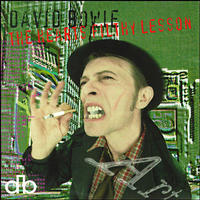
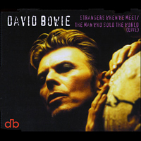
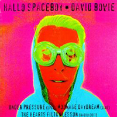

For an album based around the concept of "Art Crimes" (in which people were murdered and their bodies mutilated as part of an underground art scene), Bowie delivered a suitably mangled self-portrait - one of a series of five he painted in 1995, and which was referred to as either The Dhead - Outside, or Head Of DB. An avid art collector, Bowie periodically sketched or painted himself, particularly through the '90s; much of his extensive private collection was sold by Sotheby's in November 2016, as part of the Bowie/Collector auction, in three parts: two collections were listed under the Modern And Contemporary Art banner, with the third listed under Design. Together, the lots sold for a total of £33 million.
Illustrator: David Bowie
LEON TAKES US OUTSIDE Valentine's Day, 25, June 16th, Wednesday, July 6th, 20, 0, 2015 Martin Luther King Day, June 18th, June 6th, Wednesday August 18th, 9th, 1999, 12, Nicholas, August, Wednesday, 13th, Sunday, 5th March, October, January, October 13th Wednesday, Martin Luther King Day, afternoon, in view of nothing, 2001 Late winter, Martin Luther King Day, 12, 16, August, Wednesday, 13th, Friday, 7 June OUTSIDE Now. Not tomorrow Yesterday Not tomorrow It happens today The damage today They fall on today They beat on the outside And I'll stand by you Now. Not tomorrow It's happening now Not tomorrow It's happening now The crazed in the hot-zone The mental and diva's hands The fisting of life To the music outside To the music outside It happens outside The music is outside It's happening outside The music is outside It's happening now Not tomorrow Yesterday Not tomorrow The music is outside It's happening outside The music is outside The music is outside Outside Outside Outside THE HEARTS FILTHY LESSON Heart's filthy lesson Heart's filthy lesson Heart's filthy lesson There's always the diamond-friendly Sitting in the Laugh Hotel The heart's filthy lesson With her hundred miles to hell Oh, Ramona If there was only something between us If there was only something between us Other than our clothes Something in our skies, something in our skies Something in our blood, something in our skies Paddy? Paddy? Who's been wearing Miranda's clothes? It's the heart's filthy lesson Heart's filthy lesson Heart's filthy lesson Falls upon deaf ears Heart's filthy lesson It's the heart's filthy lesson Heart's filthy lesson Heart's filthy lesson Falls upon deaf ears Falls upon deaf ears Heart's filthy lesson Heart's filthy lesson Heart's filthy lesson Oh Ramona, if there was only some kind of future Oh Ramona, if there was only some kind of future And these cerulean skies Something in our skies, something in our skies Something in our blood, something in our skies Paddy? Paddy? Paddy, will you carry me? I think I've lost my way Heart's filthy lesson, heart's filthy lesson I'm already five years older, I'm already in my grave I'm already Heart's filthy lesson, heart's filthy lesson I'm already I'm already Heart's filthy lesson, heart's filthy lesson Will you carry me? Oh Paddy I think I've lost my way Paddy, what a fantastic death abyss Heart's filthy lesson Paddy, what a fantastic death abyss Heart's filthy lesson It's the heart's filthy lesson Tell the others Heart's filthy lesson It's the heart's filthy lesson Paddy, what a fantastic decade Tell the others Heart's filthy lesson It's the heart's filthy lesson Paddy, what a fantastic death abyss Heart's filthy lesson It's the heart's filthy lesson Tell the others A SMALL PLOT OF LAND Poor soul Spit upon that Poor soul He never knew what hit him and it hit him so Poor dunce He pushed back the pigmen The Barbs laughed The fool is dead Poor dunce He's less than within us The brains talk But the will to live is dead And prayer can't travel so far these days The talk of your life Standing so near To innocent eyes Poor dunce Swings through the tunnels And claws his way Is small life so manic? Are these really the days? Poor dunce, poor dunce Poor soul Spit upon that Poor soul He never knew what hit him and it hit him so People spat Pigmen Poor soul Poor soul Poor soul BABY GRACE (A HORRID CASSETTE) Test, testing, testing This, hmm, Grace is my name And and I was ... um It was that phot-... a fading photograph of a patch-... a patchwork quilt And they've put me on these Ramona put me on These interest drugs So I'm thinking very too bit too fast like a brain hatch And ah they won't let me see anybody If I want to sometimes ... and I ask I can still hear some pop ... popular musics and aftershocks See (achoo) I've been watching a television of ... um In the homelands That's the new homelands and um that's all I can remember And now they just want me to be quiet And I think something is going to be horrid HALLO SPACEBOY Spaceboy, you're sleepy now Your silhouette is so stationary You're released but your custody calls And I want to be free, don't you want to be free? Do you like girls or boys? It's confusing these days But moondust will cover you, cover you This chaos is killing me So bye-bye love Yeah bye-bye love Bye-bye love Yeah bye-bye love This chaos is killing me Hallo Spaceboy You're sleepy now Your silhouette is so stationary You're released but your custody calls And I wanna be free Don't you wanna to be free? Do you like girls or boys? It's confusing these days But moondust will cover you Cover you And that chaos is killing me So bye-bye love So bye-bye love Yeah bye-bye love So bye-bye love This chaos is killing me (Will cover you) This chaos is killing me (Will cover you) Yeah bye-bye love Bye-bye love Good time love Be sweet sweet dove Bye-bye spaceboy Bye-bye love Moondust will cover you THE MOTEL For we're living In a safety zone Don't be holding back from me We're living from hour to hour down here And we'll take it when we can It's a kind of living which recognises The death of the odourless man When nothing is vanity, nothing's too slow It's not Eden, but it's no sham There is no hell There is no shame There is no hell Like an old hell There is no hell And it's lights up, boys Lights up boys Explosion falls upon deaf ears While we're swimming in a sea of sham Living in the shadow of vanity A complex fashion for a simple man And there is no hell And there is no shame And there is no hell Like an old hell There is no hell And the silence flies On its brief flight A razor-sharp crap shoot affair And we light up our lives And there's no more of me exploding you Re-exposing you Like everybody do Re-exploding you I don't know what to use Make somebody move Me exploding Me exploding you I don't know what to use Make somebody move Me exploding Me exploding you I HAVE NOT BEEN TO OXFORD TOWN Baby Grace is the victim She was 14 years of age And the wheels are turning, turning For the finger points at me (All's well) But I have not been to Oxford Town (All's well) No I have not been to Oxford Town Toll the bell Pay the private eye (All's well) 20th century dies And the prison priests are decent My attorney seems sincere I fear my days are numbered Lord get me out of here Here (All's well) But I have not been to Oxford Town (All's well) But I have not been to Oxford Town Toll the bell Pay the private eye (All's well) 20th century dies This is your shadow on my wall This is my flesh and blood This is what I could've been And the wheels are turning and turning As the Twentieth Century dies If I had not ripped the fabric If time had not stood still If I had not met Ramona If I'd only paid my bill (All's well) I have not been to Oxford Town (All's well) But I have not been to Oxford Town Toll the bell Pay the private eye (All's well) 20th century dies This is my bunk with two sheets This is my food though foul This is what I could have been Toll the bell Pay the private eye All's well 20th Century dies Toll the bell Pay the private eye All's well 20th century dies All's well 20th century dies All's well All's well, all's well Toll the bell Pay the private eye All's well 20th century dies Toll the bell Pay the private eye All's well 20th century dies NO CONTROL Stay away from the future Back away from the light It's all deranged � no control Sit tight in your corner Don't tell God your plans It's all deranged No control If I could control tomorrow's haze The darkest shore would not bother me If I can't control The web we weave My life will be lost in falling leaves Every single move's uncertain Don't tell God your plans It's all deranged No control I should live my life on bended knee If I can't control my destiny You've got to have a scheme You've got to have a plan In the world of today, for tomorrow's man No control Stay away from the future Don't tell God your plans It's all deranged No control Forbidden words, deafen me In memory, no control See how far a sinful man Burn his tracks, his bloody robes You've got to have a scheme You've got to have a plan In the world of today, for tomorrow's man I should live my life on bended knee If I can't control my destiny No control I can't believe I've no control It's all deranged I can't believe I've no control It's all deranged Deranged Deranged ALGERIA TOUCHSHRIEK My name is Mr. Touchshriek Of Touchshriek with mail over and fantasy My shop sells egg shells off the seashores and Empty females I'm thinking of leasing the room above my shop To a Mr. Walloff Domburg A reject from the world wide Internet He's a broken man I'm also a broken man It would be nice to have company We could have great conversations Looking through windows for demons And watching the young advance in all electric Some of the houses around here Still have inhabitants in them I'm not sure if they're from this country or not I don't get to speak much to anyone Or that sort of thing If I had another broken man Oh, I dream of something like that THE VOYEUR OF UTTER DESTRUCTION (AS BEAUTY) Turn and turn again Turn and turn again I shake And stare at the sun 'Til my eyes burn I shake At the mothers brutal vermin I shake And stare at the watery moon With the same desire As the sober Philistine And I shake Turn and turn again Worm, the pain and blade Turn and turn again The screw Is a tightening atrocity I shake For the reeking flesh is as romantic as hell The need To have seen it all The voyeur of utter destruction As beauty And I shake Worm, the pain and blade Turn and turn again I shake Turn and turn again I shake I shake I shake Research has pierced All extremes of my sex Call it a day Call it a day Needle point life Blinds the will to be next Call it a day Call it a day Research has pierced All extremes of my sex Call it a day Call it a day Needle point life Blinds the will to be next Call it a day Call it a day Call it a day Call it a day Call it today Call it today Today Today RAMONA A. STONE / I AM WITH NAME I was Ramona A. Stone I started with no enemies of my own I was an artiste In a tunnel But I've been having a midi-life crisis And I've been dreaming in a sleep And ape men with metal parts I've spat upon deeply felt age I've hid my hearts in And I hate the funny coloured English We'll creep together you and I For I know who the small friends are I am with name, I am with name I am Ramona A. Stone A night fear female Good timing drone I am with name, I am with name I am with name, I am with name I am Ramona A. Stone She should say: twitch and stream It'll end in chrome The night of the female Good time drone I am with name I am Ramona A. Stone She should say: I am with name I am Ramona A. Stone A person who loses a name Feels anxiety descending Left at the crossroads, between the centuries A millennium fetish I am with name, I am with name I am Ramona A. Stone I am with name Night fear female Good timing drone I am with name I am Ramona A. Stone (Give it to me one more time!) Anxiety descending Anxiety descending WISHFUL BEGINNINGS Cruising around me The flames burn my body Wishful beginnings Does this remind them again and again You're a sorry little girl You're a sorry little girl Please hide For the pain must feel Like snow You're a sorry little girl Sorry little girl Please hide from the kiss and the bite Shame burns Breathing in, breathing out Breathing in only doubt The pain must feel like snow I'm no longer your golden boy Sorry little girl I'm sorry little girl The pain must feel like snow There you go Cover me, cover me We flew on the wings We were deep in the dead air And this one will never go down We had such Wishful beginnings But we lived Unbearable lives I'm sorry little girl Sorry little girl So so sorry little girl The pain must feel like snow There you go There you go WE PRICK YOU White boys falling on the fires of night (I wish you'd tell, I wish you'd tell) Flesh punks burning in their glue Revolution comes in the strangest way (I wish you'd tell, I wish you'd tell) I'd rather be inside you Tell the truth Tell the truth Tell the truth We prick you, we prick you, we prick you Tell the truth Tell the truth Tell the truth We prick you, we prick you, we prick you (You show respect, even if you disagree You show respect You show respect, even if you disagree You show respect) Mama can I kiss you daddy can I tell (We wish you well, we wish you well) Innocence passed me by Want to be screwing When the nightmare comes (I wish you well, I wish you well) Want to come quick and die Tell the truth Tell the truth Tell the truth We prick you, we prick you, we prick you Tell the truth Tell the truth Tell the truth We prick you, we prick you, we prick you (You show respect, even if you disagree You show respect You show respect, even if you disagree You show respect) All the little rose-kissed foxy girls (Shoes, shoes, little white shoes) Where have all the flowers gone All the little fragile champion boys (Toys, toys, little black toys) Dripping on the end of a gun (Even if you disagree) Tell the truth Tell the truth Tell the truth We prick you, we prick you, we prick you Tell the truth Tell the truth Tell the truth We prick you, we prick you, we prick you (You show respect, even if you disagree You show respect) Shoes, shoes, little white shoes Wish you well, wish you well (Even if you disagree, even if you disagree) Toys, toys, little black toys Wish you well, wish you well (Even if you disagree) Shoes, shoes, little white shoes Wish you well, wish you well NATHAN ADLER 1 Old Touchschriek was the main name server Suspected of being a shoulder surfer But he didn't know from shit About challenge response systems Now Ramona A. Stone we know was selling interest drugs She got males all hung up on her mind filters She was, if you don't mind me saying so, an update demon Now Leon He couldn't wait for 12 o'clock midnight He jumps up on the stage with a criss criss machete And slashes around cutting a zero on everything I mean a zero in the fabric of time itself Was this a suspect? I says to myself: "Whoa! Quelle courage!" Oh wait, I'm getting ahead of myself Let me take you back to when it all began I'M DERANGED Funny how secrets travel I'd start to believe If I were to bleed Thin skies, the man chains his hands held high Cruise me blond Cruise me, babe A blond belief beyond beyond beyond No return, no return I'm deranged Deranged, down, down, down I'm deranged, down, down, down So cruise me, babe; cruise me, baby And the rain sets in It's the angel-man I'm deranged Cruise me, cruise me, cruise me, babe The clutch of life and the fist of love Over your head Big deal Salaam Be real deranged Salaam Before we reel I'm deranged And the rain sets in It's the angel-man I'm deranged And the rain sets in It's the angel-man I'm deranged Cruise me, cruise me, cruise me, babe I'm deranged And the rain sets in It's the angel-man THRU' THESE ARCHITECT'S EYES (We're living in the golden age, the golden age, the golden age) (We're living in the golden age, the golden age, the golden age) I'm stomping along On this big Philip Johnson Is delay just wasting my time Looking across at Richard Rogers Scheming dreams to blow both their minds It's difficult you see To give up baby To leave a job When you know You know the money's from day to day All the majesty of a city landscape All the soaring days in our lives All the concrete dreams In my mind's eye All the joy I see Through these architect's eyes (We're living in the golden age, in the golden age, in the golden age) Cold winter bleeds On the girders of Babel This stone boy watching the crawling land Rings of flesh and the towers of iron The steaming caves and the rocks and the sand Stomping along on this big Philip Johnson Is delay just wasting my time It's difficult you see To give up baby These summer scum holes This goddamned starving life All the majesty of a city landscape All the soaring days in our lives All the concrete dreams In my mind's eye All the joy I see Through these architect's eyes (We're living in the golden age, in the golden age, the golden age) It's difficult you see It's difficult you see All the majesty of a city landscape All the soaring days in our lives All the concrete dreams In my mind's eye All the joy I see Through these architect's eyes NATHAN ADLER 2 Ramona was so cold When she broke it off with Leon She said, "The ring is enough I don't wanna see his face again" Ramona was so cold STRANGERS WHEN WE MEET You, You, You You, You, You All our friends Now seem so thin and frail Slinky secrets Hotter than the sun No peachy prayers No trendy r�chauff� I'm with you So I can't go on All my violence raining tears upon the sheets I'm bewildered, for we're strangers when we meet Blank screen TV Preening ourselves in the snow Forget my name But I'm over you Blended sunrise And it's a dying world Humming Rheingold We scavenge up our clothes All my violence raging tears upon the sheets I'm resentful, for we're strangers when we meet Cold tired fingers Tapping out your memories Halfway sadness Dazzled by the new Your embrace It was all that I feared That whirling room We trade by vendu Steely resolve is falling from me My poor soul, poor bruised passivity All your regrets ran rough-shod over me I'm so glad that we're strangers when we meet I'm so thankful, that we're strangers when we meet I'm in clover, for we're strangers when we meet Heel head over, but we're strangers when we meet Strangers when we meet Strangers when we meet Strangers when we meet Strangers when we meet HALLO SPACEBOY (PET SHOP BOYS REMIX) If I fall, moondust will cover me, moondust will cover me If I fall, moondust will cover me If I fall, moondust will cover me Spaceboy, you're sleepy now Your silhouette is so stationary You're released but your custody calls And I wanna be free, don't you want to be free? Do you like girls or boys? It's confusing these days But moondust will cover you, cover you So bye-bye love Yeah bye-bye love Hallo Spaceboy This chaos is killing me Hallo Spaceboy Spaceboy, Spaceboy, Spaceboy (hallo) Moondust will cover me Ground to Major, bye-bye Tom (This chaos is killing me) Dead the circuit, countdown's wrong (This chaos is killing me) Planet Earth, is control on? (So sleepy now) Do you wanna be free? Don't you wanna be free? Do you like girls or boys? It's confusing these days But moondust will cover you, cover you So bye-bye love Yeah bye-bye love Hallo Spaceboy, Spaceboy, Spaceboy, Spaceboy (hallo) Hallo Spaceboy You're sleepy now This chaos is killing me This chaos is killing me So bye-bye love Yeah bye-bye love Do you wanna be free? Yes, I wanna be free Hallo Spaceboy You're sleepy now Do you like girls or boys? It's confusing these days But moondust will cover you Cover you So bye-bye love Yeah bye-bye love Hallo Spaceboy, Spaceboy, Spaceboy, Spaceboy (hallo) Hallo Spaceboy You're sleepy now Hallo Spaceboy, Spaceboy, Spaceboy, Spaceboy (hallo) Hallo, hallo If I fall, moondust will cover me
SINGLES


